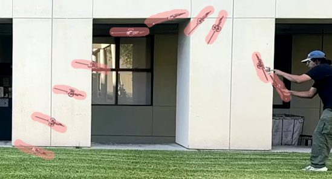
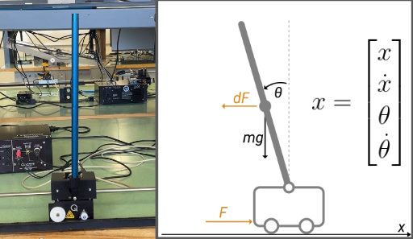
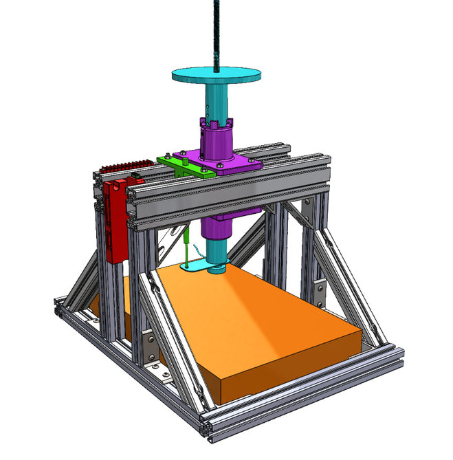
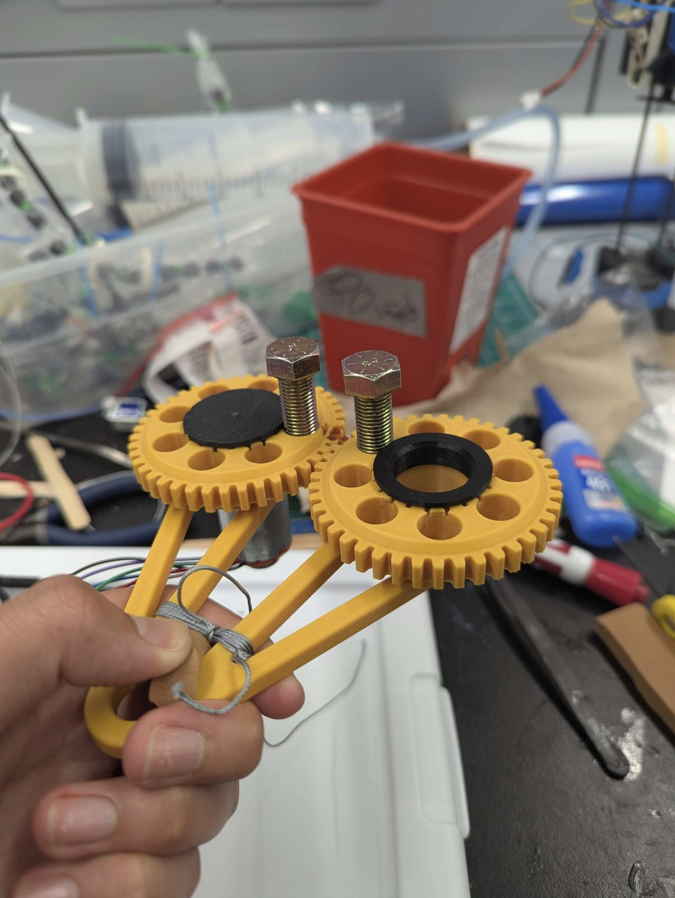

Selected work, grouped roughly by the kind of problem each project was, with photos, drawings, and a short writeup for each one.
Jumping robots from the Hawkes Lab, including Cooper and its reaction wheel reorientation system, alongside controls work, including LQR with Kalman estimation on a real cart-pendulum and MPC trajectory optimization for a double pendulum arm.
Cooper · inertial jumper · vine robots · cart-pendulum · double pendulum arm


A running shoe sole that beat the Nike Alphafly benchmark in energy return, the ASTM-compliant impact test machine built to prove it, production tooling designed during an internship at CelLink, and mechatronic builds including a handheld haptic force display and an e-ink desk display now in progress.
running shoe sole · impact test machine · haptic force display · CelLink tooling · e-ink display · motor adaptor · bike fork FEA · scramjet CFD


Silicon and glass microfluidic channels carried through a full MEMS fabrication workflow in the cleanroom, from KOH anisotropic etching through SEM and XRD characterization of the etched sidewalls.
MEMS microfluidics